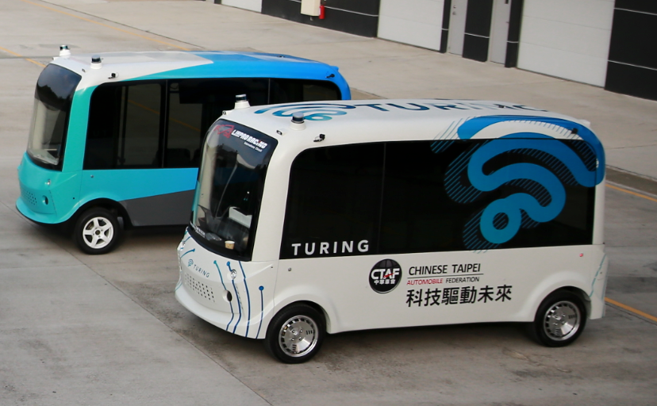

I build robots and autonomous systems that operate in the real world and study how humans and AI can think, decide, and work better together.

Recent publications across autonomy, simulation, and human-AI collective intelligence, synced from a Scholar-exported source and enriched with local summaries, tags, and media.
Shuo Sun is a Postdoctoral Associate at the Singapore-MIT Alliance for Research and Technology (SMART), affiliated with the M3S Interdisciplinary Research Group. He received both his Ph.D. and B.Eng. in Mechanical Engineering from the National University of Singapore, under Professor Marcelo H. Ang Jr.
His research spans robotics, autonomous systems, and human-AI collective intelligence, with a particular interest in intelligent systems that augment human potential and empower the workforce of the future. His work aims to bridge the gap between machine intelligence and human capability, advancing human-robot collaboration and the evolution of meaningful, AI-enabled labor.
Motion prediction, planning, and control; full-stack self-driving for service vehicles.
Diffusion-based driving scenario generation for safe, scalable testing.
Ontologies of work and collective intelligence, with a focus on where and how AI augments people.
From research prototype to deployed, commercialized robotic platforms.
Open to collaborations across robotics, autonomous systems, and human-AI intelligence. The fastest way to reach me is email.